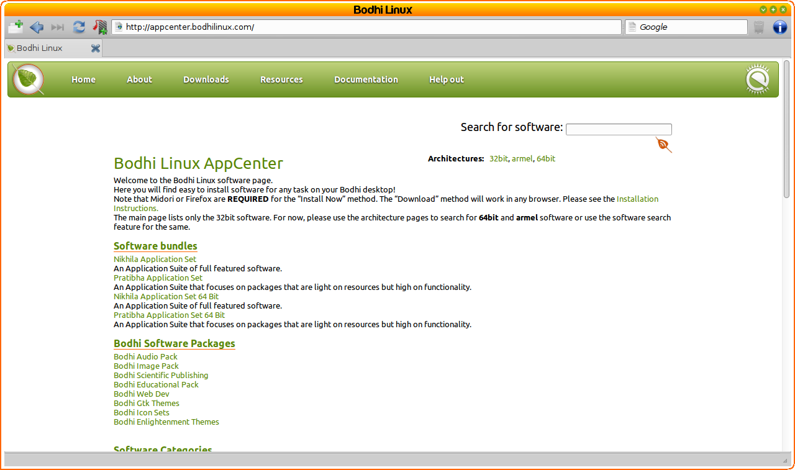

[kliknite na bilo koju sliku za uvećanje]
U većini slučajeva, bilo bi dobro imate uspostavljenu internet konekciju kako bi instalirali programe u Bodhi Linux-u.
Molimo vas da pratite ovaj link ako vam treba pomoć za
Povezivanje na Internet.
Ažuriranje sistema(Updating System)
Prva stvar koju treba da uradite nakon uspostavljanja internet konekcije je da ažurirate(update) sistem.
Postoji više načina kako ovo da uradite, ali najjednostavnije se to može postići otvaranjem aplikacije Terminology, koja se nalazi na sledećoj lokaciji Main Menu>Applications>Accessories,
i pokretanjem sledećih komandi:
sudo apt-get update && sudo apt-get -y dist-upgrade
Primedba: ove komande se oslanjaju na apt-get komandne-linije alatu (terminal) i može biti izvršena kada god želite da ažurirate vaš sistem(programe & sve ostalo) na najnovije verzije.
Bodhi Linux AppCenter
{kind=link}
Bodhi Linux tim je kreirao AppCenter kao vrlo brz i jednostavan način za instalaciju najčešćih programa. U AppCenter-u nećete naći svaki program koji možete da instalirate u BodhiLinux-u, ali ćete naći ono što mi smatramo da su "najbolji" programi za svaku pojedinačnu kategoriju.
Bodhi Linux AppCenter je dizajniran da najbolje radi sa Midori-jem, standardnim(default) web browser-om u Bodhi-ju. Takođe obezbeđuje nekoliko setova programa(ili meta-paketa) koji sadrže programe koji su namenski raspoređeni. Pročitajte više o svakom kako bi se upoznali šta se u njima nalazi.
Evo kratkog uputstva kako instalirati programe iz Bodhi Linux AppCenter-a:
-
Nađite vaš program.
Ako već znate koji program želite da instalirate, samo otkucajte ime tog programa u polju za pretragu gore desno.
Ako ne, jednostavno pregledajte kategorije koje se nalaze na početnoj stranici. -
Idite na stranicu.
Bilo koji metod za traženje programa da izaberete, biće vam dostupan link.
Svaki program ima svoju stranicu sa opisom i slikom kako izgleda(screenshot). -
Instalirajte!
Možete izabrati jedan od tri načina za instalaciju:
- Instaliraj Sada (Install Now)
Ovo je najčešće korišćen metod za instalaciju programa iz Bodhi Linux AppCenter. Samo kliknite na "Install Now" dugme i unesite vašu lozinku(password) kada vam je instaler zatraži. To je to! Vaš program, kao i sve prateće komponente zajedno sa njim, će automatski biti instalirani.
- Download
Ovaj metod vam omogućava da skinete program zajedno sa svim pratećim komponentama, u jednom paketu. Veliki broj korisnika nalazi da je ovo skidanje paketa korisno na mašini sa brzim internetom i potom instaliraju taj paket (program) na mašini koja ima sporu ili uopšte nema internet vezu.
Kompletno uputstvo ovog metoda nije ovde detaljno opisano, ali se može naći na Bodhi Linux AppCenter stranici. - Brza Instalacija (Quick Install)
Ovaj metod radi brže od prethodna dva, ali se ne preporučuje ukoliko bar jedan paket već nije instaliran sa "Install Now" metodom, jer "Install Now" metod resinhronizuje fajlove index paketa iz njihovih izvora(source-a). Da parafraziramo, "Install Now" ažurira(update) (ne upgrade) sve pakete na njihove najnovije verzije i instalira izabrane pakete. "Quick Install" radi samo ovo poslednje.
- Instaliraj Sada (Install Now)
Linkovi(potrebna internet konekcija)
The Bodhi Linux AppCenter
Kompletna uputstva za instaliranje u AppCenter-u
Synaptic Package Manager
Synaptic Package Manager, zajednički za sve distribucije bazirane na Debian GNU/Linux , je standardno(default) instaliran u Bodhi Linux-u. Da biste ga pokrenuli, idite na Main Menu>Applications>Preferences>Synaptic Package Manager.
Sa Synaptic Package Manager-om, imate pristup svim programima iz Bodhi Linux i Ubuntu 12.04 skladištima programa(repository). (Repository je server(i) gde se nalaze programi koji su vam dostupni za instalaciju).
Molimo pogledajte stranicu Bodhi Linux Doc Wiki za kompletno uputstvo o korišćenju Synaptic Package Manager-a.
Linkovi(potreban internet):
The Bodhi Linux Doc Wiki
Synaptic
on the Doc Wiki
apt-get & dpkg (napredan)
Komandno-linijski (terminalski) alat apt-get and dpkg
su "backend" u odnosu na gore pomenute metode za instalaciju programa.
Napredni korisnici mogu slobodno da koriste ove alate iz terminala, ali njihova upotreba je van okvira ovog dokumenta.
man apt-get
ili
man dpkg
za uputstva o ovim komandama.
Instalacija iz izvornog koda(source code) je takođe na raspolaganju naprednim korisnicima.
Primer. Instalacija Jezičkog Paketa
Primedba: Ovi primeri samo pokrivaju instalaciju
jezičkog paketa. Da promenite jezik sistema u jezički paket koji ste upravo instalirali, idite
ovde.
Da instalirate jezički paket koristeći Bodhi Linux AppCenter, samo idite na Main Menu>Bodhi Linux>Add Software. Ovo će otvoriti vaš default web browser (Midori na svežoj Bodhi instalaciji) na Appcenter's web stranici. Sada, klizite dole do Extra sekcije. Tamo ćete videti Language Packs. Kliknite da bi videli dostupne jezičke pakete koje Bodhi trenutno podržava. Nakon što kliknete na onaj koji želite, samo koristite jedan od tri metoda koji su gore opisani da ga instalirate, bilo da je to Install Now, Download, or Quick Install.
Da instalirate jezički paket uz pomoć Synaptic Package Manager-a, idite na Main Menu>Applications>Preferences>Synaptic Package Manager. Zatražiće vam lozinku(password).Ukucajte je, i pritisnite Enter. Kada se otvori, kliknite Reload dugme. Ovo će ažurirati sve pakete na njihove poslednje(najnovije) verzije tako da pakete koje instalirate budu na svojim najnovijim verzijama. Kada to završite, potražite "bodhi-language" koristeći polje za pretragu na vrhu prozora. Ovo će prikazati dostupne bodhi-language pakete. Desni klik na onaj koji želite i obeležite(selektujte) Mark for Installation (Obeleži za Instalaciju). Zatim kliknite Apply dugme. Iskočiće vam prozor koji vam prikazuje šta će biti instalirano, koliko mesta će zauzeti, i tražiće da kliknete Apply dugme da bi potvrdili instalaciju izabranog jezičkog paketa. Kada to kliknete, počeće instalacija paketa i obavestiće vas kada se završi.
Da instalirate jezički paket koristećiapt-get komandu, moraćete da znate tačno ime paketa koji želite da instalirate. Ako znate kako se zove, dobro za vas, ali ćemo bez obzira na to pokazati kako da pronađete njegovo ime:
Da nađete ime paketa:
-
Otvorite LXTerminal, Bodhi Linux-ov default(standardni) terminal, sa
Main Menu>Applications>Accessories.
-
Koristite komandu:
apt-cache search "[keywords]".
U ovom slučaju, keywords(ključne reči) će biti "bodhi language".
To bi trebalo ovako da izgleda:apt-cache search "bodhi language". -
Jezički paketi će biti vidljivi, imena i sve. Nemojte još zatvarati terminal.
Da instalirate paket:
-
U otvorenom prozora LXTerminala, ukucajte komandu:
sudo apt-get install -y [package-name].
U ovom primeru, ime paketa će biti bodhi-language-fr (franucski jezički paket).
To bi trebalo ovako da izgleda:sudo apt-get update && sudo apt-get install -y bodhi-language-fr. -
Kada pritisnete Enter, na ekranu će da se pokrene lavina teksta opisujući šta komanda radi. Moraćete malo da sačekate.
-
Kada vam ponovo bude izašao user@computer prompt, instalacija je završena.